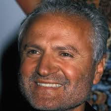

Miami

When Cunanan arrived in Miami, he checked into the Normandy Hotel with a fake
passport. Miriam Hernandez, the hotel manager, noted Cunanan’s good looks and manners, “He
was a very good guest, he had a beautiful smile.” It was here Cunanan stayed for approximately
three weeks before murdering Gianni Versace. On July 7th Cunanan pawned one of Lee Miglin’s
gold coins at a pawnshop despite knowing that the police regularly check pawn shop records.
Versace was a well know celebrity in the Miami area. He had a good rapport with the community
and was commonly seen walking around South Beach. On the morning of July 15, 1997 after
doing his traditional morning walk Versace was shot by Cunanan. The position of the body
indicated that Versace probably saw his killer. Witnesses say that after murdering Versace,
Cunanan casually walked away like nothing happened. A house worker from Versace’s mansion
soon chased Cunanan down an alley where Cunanan ultimately pointed his gun at him
and demanded him to stop. A manhunt for Cunanan began in Miami Beach as traffic to the city was
cut off and the island was sealed off to outsiders. Authorities soon pinned down Cunanan to an
old Miami houseboat, where a standoff took place for approximately eight hours. Police finally
entered the boat to find Cunanan dead. Cunanan’s cause of death was suicide by a self inflicted
shot to the head. He left no suicide note.